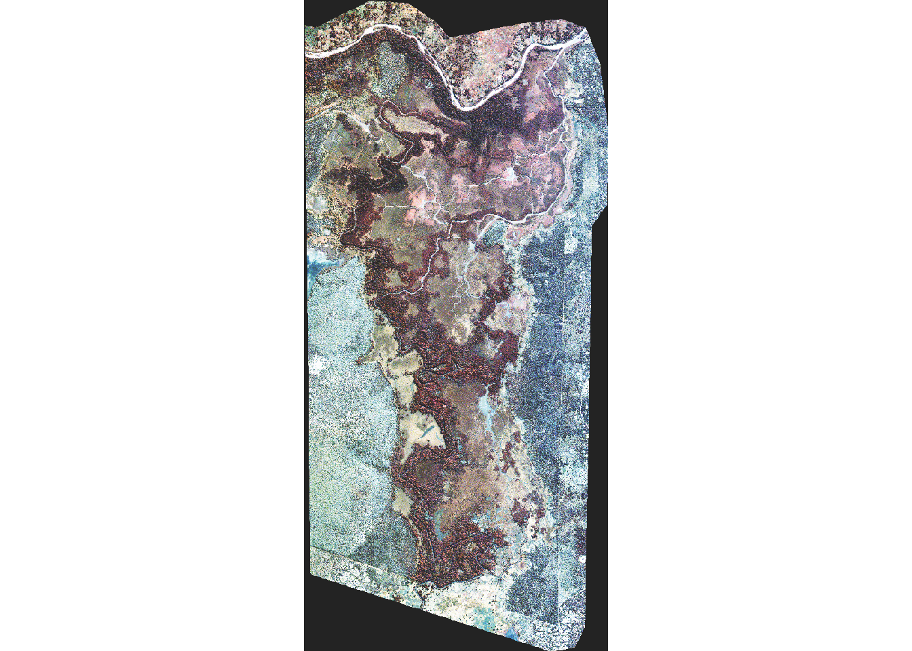

Chapter 13 Raster Data
Questions
- what is a raster dataset?
- What tools/functions are used to import raster in R?
- How to I work with and plot raster data in R
- How missing or bad data in R are handled with R
Objectives
- Describe the fundamental attributes of a raster dataset
- Explore raster attributtes and metadata
- Import raster dataset into R workspace
- visualize raster object
- Distinguish single versus multi-bands rasters
13.1 Introduction to Raster data
This this section introduce you to the fundamental principles, packages and metadata/raster attributes that are needed to work with raster data in R. The section discuss some of the core metadata elements that you need to understand to work with rasters in R, including CRS and resolution. Furthermore, missing and bad data values stored in raster will be explored and techniques to handles these elements will be illustrated.
The book use several packages including the tidyverse ecosystem (Wickham 2017)—with popular packages like the ggplot2(Wickham 2016) and dplyr (Wickham et al. 2019). The widely used packages for handling raster and vector data like raster (Hijmans 2019), sp(Bivand, Pebesma, and Gomez-Rubio 2013), sf (Pebesma 2018) and rgdal (Bivand, Keitt, and Rowlingson 2019) make core tools in this book. R needs these packages imported into the environment to use their functions, which can easily done with the require() function.
require(sf)
require(sp)
require(raster)
require(tidyverse)
require(metR)13.1.1 GeoTiff
A popular public domain raster data format is the GeoTIFF format. If maximum portability and platform independence is important, this file format may be a good choice.
13.1.2 Explore the raster attribute
One of the common raster file is the *GeoTiff** that embed tags of metadata information bout the raster file. This metadata provide the information of the file and hence help us understand the internal structure of the file. This information can be accessed with the GDALinfo() function (Bivand, Keitt, and Rowlingson 2019). Looking at the metadata help us have a glimpse of the file before even the file is imported into the workspace.
rgdal::GDALinfo("e:/GIS/Tanzania spatial data Bank/Lake_Tanganyika_Bathymetry/Lake_Tanganyika_Bathymetry/grid/tanganyika_dbm (2013_10_23 20_44_28 UTC).tif")rows 6589
columns 2575
bands 1
lower left origin.x 29.05769
lower left origin.y -8.811174
res.x 0.000833
res.y 0.000833
ysign -1
oblique.x 0
oblique.y 0
driver GTiff
projection +proj=longlat +datum=WGS84 +no_defs
file e:/GIS/Tanzania spatial data Bank/Lake_Tanganyika_Bathymetry/Lake_Tanganyika_Bathymetry/grid/tanganyika_dbm (2013_10_23 20_44_28 UTC).tif
apparent band summary:
GDType hasNoDataValue NoDataValue blockSize1 blockSize2
1 Float32 TRUE -3.402823e+38 128 128
apparent band statistics:
Bmin Bmax Bmean Bsd
1 -1500 0 -607.0582 427.0307
Metadata:
AREA_OR_POINT=Area 13.1.3 Read a GeoTIFF raster data
Once you have a glimpse of the information of the raster—for example the above information show that the tiff contain elevation values and provide the summary statistics of the elevation with minimum value of 0 and maximum value of 1500 with average of 607. It also show the geographical extent with minimum longitude o 29.05769 and maximul latitude of -8.811174. Furthermore, the metadata tell us that the file is projected with World Geodetic System (WGS84) and the cell has a horizontal resolution of 0.000833 degree. Once we know this information, we can read the file with the raster function of raster package (Hijmans 2019)
For this example, we use the bathmetry information of Lake Tanganyika found in Africa. It the world’s longest freshwater lake, the second largest largest by volume, and the second deepest lake in the world after lake Baikal in Siberia (“Lake Tanyanyika,” n.d.).
lt.bath = raster("e:/GIS/Tanzania spatial data Bank/Lake_Tanganyika_Bathymetry/Lake_Tanganyika_Bathymetry/grid/tanganyika_dbm (2013_10_23 20_44_28 UTC).tif")We can summary function to look at the statistics of the bathmetry of this lake. Looking at the descriptive statistics, we notice that the lake has the depth range from 0 to 1500 m and there is no cell without a value.
lt.bath %>% summary() tanganyika_dbm_.2013_10_23_20_44_28_UTC.
Min. -1500.0000
1st Qu. -958.3341
Median -529.9788
3rd Qu. -250.8468
Max. 0.0000
NA's 0.0000There are times when a raster file does not show the summary statistics. When this occurs you can manually calculate the cell values using the setMinMax() function.
lt.bath %>% setMinMax() class : RasterLayer
dimensions : 6589, 2575, 16966675 (nrow, ncol, ncell)
resolution : 0.000833, 0.000833 (x, y)
extent : 29.05769, 31.20266, -8.811174, -3.322537 (xmin, xmax, ymin, ymax)
crs : +proj=longlat +datum=WGS84 +no_defs +ellps=WGS84 +towgs84=0,0,0
source : e:/GIS/Tanzania spatial data Bank/Lake_Tanganyika_Bathymetry/Lake_Tanganyika_Bathymetry/grid/tanganyika_dbm (2013_10_23 20_44_28 UTC).tif
names : tanganyika_dbm_.2013_10_23_20_44_28_UTC.
values : -1500, 0 (min, max)13.1.4 View Raster Coordinate Reference System
A spatial reference system (SRS) or coordinate referene system (CRS) is a coordinate-based local, regional or global system used to locate geographical entities (“Coordinate Reference System,” n.d.). A spatial reference system defines a specific map projection and transofrmation betweeen diffferent spatial reference systems. We can look the embedded CRS in the raster file with teh crs() function from raster package.
lt.bath %>% crs()CRS arguments:
+proj=longlat +datum=WGS84 +no_defs +ellps=WGS84
+towgs84=0,0,0 We notice that the raster file is projected in Word Geodetic System of 1984 (WGS84). In summary the projection +proj=longlat +datum=WGS84 +no_defs +ellps=WGS84 +towgs84=0,0,0 tell us as follows:
proj=longlat: the projectionis in longitude and latitude decimal degreesdatum=WGS84: the datum is WGS84 and it referes to the 0,0 refereence for the coordinate system used in the projectionellps=WGS84: the ellipsoidd—how the earth’s roundness is calculated for the data is WGS84
13.1.5 Dealing with missing data in raster
Raster data often has NoData value to represent the absence of data. This is a value assigned to pixels where data is missing or absent. The raster comes with a ract1 contain both the elevation and bathmetry information. But if you want to plot area contour from the coastline offshore, you will need to remove elevation information and this is when you assign the elevation pixel with the NoData value.
The values that is conventionally used to represent missing data varies by ther raster data type. For example, for floating points rasters, the figure -3.4e+38 is commonly used while for integers a figure -9999 is common. However, when raster are imported,
R assigns these missing cell with NA.
tz.bath = raster("e:/GIS/ROADMAP/Etopo 1/Tanzania_etopo1/tanz1_-3432.asc")
tz.bath %>% summary() tanz1_.3432
Min. -4892
1st Qu. -3519
Median -271
3rd Qu. 615
Max. 5435
NA's 013.2 Assign projection and Reproject Raster Data in R
Sometimes we encounter raster datasets that do not “line up” when plotted or analyzed. Rasters that don’t line up are most often in different Coordinate Reference Systems (CRS). This section explains how to deal with rasters in different, known CRSs. It will walk though reprojecting rasters in R using the projectRaster() function in the raster package. We can assess the projection of the two raster data we loaded earlier with the crs() function from raster package. Let’s begin with the bathmetry raster of Lake Tanganyika
crs(lt.bath)CRS arguments:
+proj=longlat +datum=WGS84 +no_defs +ellps=WGS84
+towgs84=0,0,0 We notice that the bathmetry raster of Lake Tanganyika has defined coordinate reference system—WGS84. let us also check the bathmetry data from the coastal water of Tanzania using the same crs() function.
crs(tz.bath)CRS arguments: NA Unfortunately, the bathmetry raster of coastal water of Tanzania lack the coordinate reference systm—this idicate that the projection is not defined yet. fortunate, raster package has projectRaster() function that allows to reproject raster without defined CRS or reproject a raster from one CRS into another. Since the lt.bath has the projection, we can use its projection to define the missing coordinate system in tz.bath raster file. Because we need to define a projection of the missing raster, we simply use the crs() function to copy the projection of lt.bath into the tz.bath as the code block illustrate
crs(tz.bath) = crs(lt.bath)We can check the coordinate of the two files if they are correct
crs(tz.bath); crs(lt.bath)CRS arguments:
+proj=longlat +datum=WGS84 +no_defs +ellps=WGS84
+towgs84=0,0,0 CRS arguments:
+proj=longlat +datum=WGS84 +no_defs +ellps=WGS84
+towgs84=0,0,0 Since we know that the coastal water of Tanzania lies at zone 37 south, we can simply assign the appropriate projection and then transform the bathmetry from WGS84 to UTM zone 37 south. Since we know the text of the zone, let us define it
tzutm = "+proj=utm +zone=37 +south +datum=WGS84 +units=m +no_defs"We then use the projectExtent() function to transform the CRS from WGS84 to UTM Zone 37 south
tz.bath.utm = projectExtent(tz.bath, tzutm)Then check the files projections. Instead of using the crs() to assess the type of projection, we use the projection() function instead.
tz.bath %>% projection(asText = F); tz.bath.utm %>% projection(asText = F)CRS arguments:
+proj=longlat +datum=WGS84 +no_defs +ellps=WGS84
+towgs84=0,0,0 CRS arguments:
+proj=utm +zone=37 +south +datum=WGS84 +units=m +no_defs
+ellps=WGS84 +towgs84=0,0,0 13.3 Raster resolution
Let’s next have a look at the resolution of reprojected tz.bath.utm and the tz.bath files.
tz.bath.utm %>% res();tz.bath %>% res()[1] 1859.258 1860.036[1] 0.01666667 0.01666667We notice that the horizontal resolution of projected utm tz.bath.utm file is given in meters of 1859.258 by 1860.036. But the the wgs84 tz.bath is given in degree of 0.01666667 by 0.01666667. Therefore, depending on how you intend to use the raster in analysis and mapping, you will find yourself resonate between geographical coordianate system (WGS) and Universal Transeverse Mercator (UTM). The former is in degree while the later is in meters.
13.4 Raster Calculation
Often times we want to perform calculations on two or more rasters to create a new output raster. For example, if we are interested in mapping the heights of trees across an entire field site, we might want to calculate the difference between the Digital Surface Model (DSM, tops of trees) and the Digital Terrain Model (DTM, ground level). The resulting dataset is referred to as a Canopy Height Model (CHM) and represents the actual height of trees, buildings, etc. with the influence of ground elevation removed.
13.5 Multi-bands satellite imagery
High resolution digital globe multispectral image. Let us explore the image first
rgdal::GDALinfo("e:/GIS/trevor/053575070010_01/053575070010_01_P001_MUL/14AUG19082006-M2AS-053575070010_01_P001.TIF")rows 5013
columns 2340
bands 8
lower left origin.x 431076
lower left origin.y 7020086
res.x 2
res.y 2
ysign -1
oblique.x 0
oblique.y 0
driver GTiff
projection +proj=utm +zone=36 +south +datum=WGS84 +units=m +no_defs
file e:/GIS/trevor/053575070010_01/053575070010_01_P001_MUL/14AUG19082006-M2AS-053575070010_01_P001.TIF
apparent band summary:
GDType hasNoDataValue NoDataValue blockSize1 blockSize2
1 UInt16 FALSE 0 224 2340
2 UInt16 FALSE 0 224 2340
3 UInt16 FALSE 0 224 2340
4 UInt16 FALSE 0 224 2340
5 UInt16 FALSE 0 224 2340
6 UInt16 FALSE 0 224 2340
7 UInt16 FALSE 0 224 2340
8 UInt16 FALSE 0 224 2340
apparent band statistics:
Bmin Bmax Bmean Bsd
1 214 1012 241.0628 6.579988
2 172 1235 203.5383 11.027946
3 170 2047 240.6267 24.320807
4 101 2047 212.6599 37.599717
5 49 1528 128.3042 32.559744
6 100 2047 306.6574 67.605365
7 56 1729 353.3486 106.036615
8 32 1723 333.0844 98.604913
Metadata:
AREA_OR_POINT=Area
TIFFTAG_COPYRIGHT=(C) COPYRIGHT 2014 DigitalGlobe, Inc., Longmont CO USA 80503
TIFFTAG_DATETIME=2014:08:19 12:17:12
TIFFTAG_IMAGEDESCRIPTION={
bandList =
[
6;
2;
3;
7;
4;
8;
5;
9;
]
}
TIFFTAG_MAXSAMPLEVALUE=2047
TIFFTAG_MINSAMPLEVALUE=0 dg = raster("e:/GIS/trevor/053575070010_01/053575070010_01_P001_MUL/14AUG19082006-M2AS-053575070010_01_P001.TIF")When we explore the raster file, it tell that the class is raster layer and it has eight bands with spatial resolution of 2 meters.
dgclass : RasterLayer
band : 1 (of 8 bands)
dimensions : 5013, 2340, 11730420 (nrow, ncol, ncell)
resolution : 2, 2 (x, y)
extent : 431076, 435756, 7020086, 7030112 (xmin, xmax, ymin, ymax)
crs : +proj=utm +zone=36 +south +datum=WGS84 +units=m +no_defs +ellps=WGS84 +towgs84=0,0,0
source : e:/GIS/trevor/053575070010_01/053575070010_01_P001_MUL/14AUG19082006-M2AS-053575070010_01_P001.TIF
names : X14AUG19082006.M2AS.053575070010_01_P001
values : 214, 1012 (min, max)Check for geographical coordinate system
dg %>% projection()[1] "+proj=utm +zone=36 +south +datum=WGS84 +units=m +no_defs +ellps=WGS84 +towgs84=0,0,0"check for the resolution
res(dg)[1] 2 213.5.1 Rater Stacks
The multi-bands raster in R are handled easily with the stack() function, which bling all bands of multi-band raster
dg.bands = stack("e:/GIS/trevor/053575070010_01/053575070010_01_P001_MUL/14AUG19082006-M2AS-053575070010_01_P001.TIF")We then preview the attributes embedded in the stacked raster object
dg.bandsclass : RasterStack
dimensions : 5013, 2340, 11730420, 8 (nrow, ncol, ncell, nlayers)
resolution : 2, 2 (x, y)
extent : 431076, 435756, 7020086, 7030112 (xmin, xmax, ymin, ymax)
crs : +proj=utm +zone=36 +south +datum=WGS84 +units=m +no_defs +ellps=WGS84 +towgs84=0,0,0
names : X14AUG190//_01_P001.1, X14AUG190//_01_P001.2, X14AUG190//_01_P001.3, X14AUG190//_01_P001.4, X14AUG190//_01_P001.5, X14AUG190//_01_P001.6, X14AUG190//_01_P001.7, X14AUG190//_01_P001.8
min values : 214, 172, 170, 101, 49, 100, 56, 32
max values : 1012, 1235, 2047, 2047, 1528, 2047, 1729, 1723 We can view the attributes of each band in the stack with a single output using the $ operator and call the layer
dg.bands@layers[[1]]
class : RasterLayer
band : 1 (of 8 bands)
dimensions : 5013, 2340, 11730420 (nrow, ncol, ncell)
resolution : 2, 2 (x, y)
extent : 431076, 435756, 7020086, 7030112 (xmin, xmax, ymin, ymax)
crs : +proj=utm +zone=36 +south +datum=WGS84 +units=m +no_defs +ellps=WGS84 +towgs84=0,0,0
source : e:/GIS/trevor/053575070010_01/053575070010_01_P001_MUL/14AUG19082006-M2AS-053575070010_01_P001.TIF
names : X14AUG19082006.M2AS.053575070010_01_P001.1
values : 214, 1012 (min, max)
[[2]]
class : RasterLayer
band : 2 (of 8 bands)
dimensions : 5013, 2340, 11730420 (nrow, ncol, ncell)
resolution : 2, 2 (x, y)
extent : 431076, 435756, 7020086, 7030112 (xmin, xmax, ymin, ymax)
crs : +proj=utm +zone=36 +south +datum=WGS84 +units=m +no_defs +ellps=WGS84 +towgs84=0,0,0
source : e:/GIS/trevor/053575070010_01/053575070010_01_P001_MUL/14AUG19082006-M2AS-053575070010_01_P001.TIF
names : X14AUG19082006.M2AS.053575070010_01_P001.2
values : 172, 1235 (min, max)
[[3]]
class : RasterLayer
band : 3 (of 8 bands)
dimensions : 5013, 2340, 11730420 (nrow, ncol, ncell)
resolution : 2, 2 (x, y)
extent : 431076, 435756, 7020086, 7030112 (xmin, xmax, ymin, ymax)
crs : +proj=utm +zone=36 +south +datum=WGS84 +units=m +no_defs +ellps=WGS84 +towgs84=0,0,0
source : e:/GIS/trevor/053575070010_01/053575070010_01_P001_MUL/14AUG19082006-M2AS-053575070010_01_P001.TIF
names : X14AUG19082006.M2AS.053575070010_01_P001.3
values : 170, 2047 (min, max)
[[4]]
class : RasterLayer
band : 4 (of 8 bands)
dimensions : 5013, 2340, 11730420 (nrow, ncol, ncell)
resolution : 2, 2 (x, y)
extent : 431076, 435756, 7020086, 7030112 (xmin, xmax, ymin, ymax)
crs : +proj=utm +zone=36 +south +datum=WGS84 +units=m +no_defs +ellps=WGS84 +towgs84=0,0,0
source : e:/GIS/trevor/053575070010_01/053575070010_01_P001_MUL/14AUG19082006-M2AS-053575070010_01_P001.TIF
names : X14AUG19082006.M2AS.053575070010_01_P001.4
values : 101, 2047 (min, max)
[[5]]
class : RasterLayer
band : 5 (of 8 bands)
dimensions : 5013, 2340, 11730420 (nrow, ncol, ncell)
resolution : 2, 2 (x, y)
extent : 431076, 435756, 7020086, 7030112 (xmin, xmax, ymin, ymax)
crs : +proj=utm +zone=36 +south +datum=WGS84 +units=m +no_defs +ellps=WGS84 +towgs84=0,0,0
source : e:/GIS/trevor/053575070010_01/053575070010_01_P001_MUL/14AUG19082006-M2AS-053575070010_01_P001.TIF
names : X14AUG19082006.M2AS.053575070010_01_P001.5
values : 49, 1528 (min, max)
[[6]]
class : RasterLayer
band : 6 (of 8 bands)
dimensions : 5013, 2340, 11730420 (nrow, ncol, ncell)
resolution : 2, 2 (x, y)
extent : 431076, 435756, 7020086, 7030112 (xmin, xmax, ymin, ymax)
crs : +proj=utm +zone=36 +south +datum=WGS84 +units=m +no_defs +ellps=WGS84 +towgs84=0,0,0
source : e:/GIS/trevor/053575070010_01/053575070010_01_P001_MUL/14AUG19082006-M2AS-053575070010_01_P001.TIF
names : X14AUG19082006.M2AS.053575070010_01_P001.6
values : 100, 2047 (min, max)
[[7]]
class : RasterLayer
band : 7 (of 8 bands)
dimensions : 5013, 2340, 11730420 (nrow, ncol, ncell)
resolution : 2, 2 (x, y)
extent : 431076, 435756, 7020086, 7030112 (xmin, xmax, ymin, ymax)
crs : +proj=utm +zone=36 +south +datum=WGS84 +units=m +no_defs +ellps=WGS84 +towgs84=0,0,0
source : e:/GIS/trevor/053575070010_01/053575070010_01_P001_MUL/14AUG19082006-M2AS-053575070010_01_P001.TIF
names : X14AUG19082006.M2AS.053575070010_01_P001.7
values : 56, 1729 (min, max)
[[8]]
class : RasterLayer
band : 8 (of 8 bands)
dimensions : 5013, 2340, 11730420 (nrow, ncol, ncell)
resolution : 2, 2 (x, y)
extent : 431076, 435756, 7020086, 7030112 (xmin, xmax, ymin, ymax)
crs : +proj=utm +zone=36 +south +datum=WGS84 +units=m +no_defs +ellps=WGS84 +towgs84=0,0,0
source : e:/GIS/trevor/053575070010_01/053575070010_01_P001_MUL/14AUG19082006-M2AS-053575070010_01_P001.TIF
names : X14AUG19082006.M2AS.053575070010_01_P001.8
values : 32, 1723 (min, max)plotRGB(dg.bands, r = 3, g = 2, b = 1, scale = 800, stretch = "hist")
b1 = raster("e:/bookdown/spatil_r/landsat_clip_2014/clip_LC81660652014164LGN00_B1.tif")
b2 = raster("e:/bookdown/spatil_r/landsat_clip_2014/clip_LC81660652014164LGN00_B2.tif")
b3 = raster("e:/bookdown/spatil_r/landsat_clip_2014/clip_LC81660652014164LGN00_B3.tif")
b4 = raster("e:/bookdown/spatil_r/landsat_clip_2014/clip_LC81660652014164LGN00_B4.tif")
b5 = raster("e:/bookdown/spatil_r/landsat_clip_2014/clip_LC81660652014164LGN00_B5.tif")
b6 = raster("e:/bookdown/spatil_r/landsat_clip_2014/clip_LC81660652014164LGN00_B6.tif")
b7 = raster("e:/bookdown/spatil_r/landsat_clip_2014/clip_LC81660652014164LGN00_B7.tif")stack(b1, b2, b3) %>% plotRGB(r = 3, g = 2, b = 1, scale = TRUE)13.6 Manipulate raster
13.7 Raster time series data
13.8 comparing NDVI from Two different sites
References
Bivand, Roger, Tim Keitt, and Barry Rowlingson. 2019. Rgdal: Bindings for the ’Geospatial’ Data Abstraction Library. https://CRAN.R-project.org/package=rgdal.
Bivand, Roger S., Edzer Pebesma, and Virgilio Gomez-Rubio. 2013. Applied Spatial Data Analysis with R, Second Edition. Springer, NY. http://www.asdar-book.org/.
“Coordinate Reference System.” n.d. https://en.m.wikipedia.org/wiki/Spatial_reference_system.
Hijmans, Robert J. 2019. Raster: Geographic Data Analysis and Modeling. https://CRAN.R-project.org/package=raster.
“Lake Tanyanyika.” n.d. https://en.m.wikipedia.org/wiki/Lake_Tangnyika.
Pebesma, Edzer. 2018. “Simple Features for R: Standardized Support for Spatial Vector Data.” The R Journal. https://journal.r-project.org/archive/2018/RJ-2018-009/index.html.
Wickham, Hadley. 2016. Ggplot2: Elegant Graphics for Data Analysis. Springer-Verlag New York. https://ggplot2.tidyverse.org.
Wickham, Hadley. 2017. Tidyverse: Easily Install and Load the ’Tidyverse’. https://CRAN.R-project.org/package=tidyverse.
Wickham, Hadley, Romain François, Lionel Henry, and Kirill Müller. 2019. Dplyr: A Grammar of Data Manipulation. https://CRAN.R-project.org/package=dplyr.